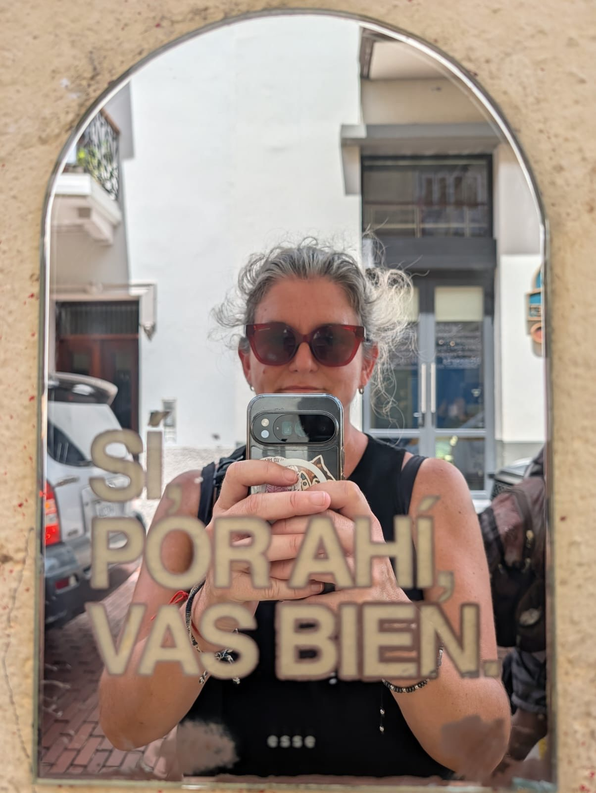

Mano a mano · Entrevista
Laura Tamarit, la psiquiatra que pide volver a escucharnos
Pasó por la dirección de hospitales públicos en San Juan y hoy atiende en consultorio. Desde ahí ve cómo una generación hiperconectada vive sus vínculos con más intensidad, menos paciencia y, muchas veces, más soledad.
Cuando se le pregunta qué cambió en los últimos años, Laura Tamarit no empieza por las pantallas. Empieza por los vínculos. “Los viven de una manera mucho más intensa y toleran mucho menos la frustración”, dice sobre los jóvenes que llegan a su consultorio. Esa intensidad se traduce en angustia, desesperanza y una gran dependencia afectiva de los amigos, de la pareja, de los pares.
Se formó en el Hospital Álvarez de la Ciudad de Buenos Aires y construyó buena parte de su carrera en la salud mental pública de San Juan, donde fue jefa del servicio del Hospital Rawson y directora del Hospital Mental Zonda. Hoy atiende en consultorio particular, y desde ahí mira cómo se vincula una generación que creció entre la pantalla y el encuentro cara a cara.
Las redes tienen su parte. Según Tamarit, cambiaron la manera en que vemos el mundo y la manera en que nos mostramos, y para quienes ya entraron en ese mundo es muy difícil pensarse por fuera. El problema son los modelos que imponen. “Te muestran un penthouse en Nueva York como una vivienda posible”, ejemplifica, cuando muy pocas personas llegan a ese nivel. Su propuesta es aprender a discriminar hasta dónde sí y hasta dónde no, saber cuándo sacar las redes del juego y hasta educar al algoritmo, que tiende a fomentar más lo negativo que lo positivo.
Tampoco cree que una pantalla alcance para conocer a alguien. “Podemos saber lo que esa persona muestra, pero no podemos saber lo que es esa persona si no nos acercamos verdaderamente”, sostiene. Para ella sigue haciendo falta el uno a uno, la charla directa. Eso no la vuelve enemiga de la tecnología. Defiende los audios porque le permitieron comunicarse a muchas personas con discapacidad, como alguien ciego que no puede leer ni escribir.
Podemos saber lo que esa persona muestra, pero no podemos saber lo que es esa persona si no nos acercamos verdaderamente.Laura Tamarit
Donde sí ve una pérdida es en la espera. Recuerda un experimento con chicos, “entre comillas”, aclara. Una barrita de chocolate ahora o un chocolate entero después de veinticinco minutos. Los más chiquitos se comían la barrita y alrededor de los siete años ya podían esperar. “Hoy la demanda tiene que ser satisfecha de manera automática”, advierte, y aclara que no habla solo de los jóvenes. También de los adultos, y de ella misma, que admite que la paciencia es algo que tiene que trabajar mucho. En su lugar aparece la pretensión de que el otro esté disponible siempre, “cuando yo quiero, cuando yo lo necesito o cuando a mí se me canta”.
Los mensajes suman otro malentendido. Igual que con una carta, cuando leemos un texto le ponemos un tono propio. En un libro el autor aclara si el personaje habló suavemente o gritó, pero en un chat nadie lo hace. “El tono, el volumen, se lo damos los que los leemos”, dice, y de ahí nacen discusiones por cuestiones banales. Un “jaja” al final o un sticker no alcanzan para ordenar lo que el texto no dice.

Sobre la soledad de una generación conectada todo el tiempo, Tamarit no esquiva la responsabilidad. “Yo formo parte de los adultos criadores de una generación que dice que se siente sola”, reconoce. Cuenta que alrededor de 2010 los adultos quisieron aprender rápido para no quedarse afuera y terminaron conectándose desde WhatsApp, Facebook e Instagram. Hoy les piden a sus hijos que controlen sus horas de pantalla, pero no siempre lo hacen ellos mismos.
Ese vacío empieza a ocuparlo la inteligencia artificial. En su consultorio recibió pacientes con cuestiones muy complicadas asociadas a haber chateado con una IA en vez de hablar con un terapeuta, y llegó a indicarles que dejaran de usarla. El riesgo, explica, es que la IA va siempre para donde quiere la persona y “nunca va a decir algo que vaya en contra de lo que la persona siente”. En un congreso en Buenos Aires escuchó que entre un 30 y un 35 % de los jóvenes, cuando les preguntaban a quién recurrían para pedir apoyo si se sentían mal, respondían que a la inteligencia artificial. Sobre este tema, en Sin vueltas publicamos la columna Una IA te escucha, pero no te extraña.
Borrando fotos no borramos recuerdos.Laura Tamarit
Bloquear o desaparecer tampoco resuelve los conflictos. Si un vínculo es violento, hay que conocer las herramientas formales y legales para protegerse, como la denuncia. Pero ninguna función de una aplicación borra lo que pasó. “Por más que uno bloquee, no va a desaparecer la huella”, afirma. Por eso defiende guardar las fotos. “Borrando fotos no borramos recuerdos”.
Su consejo para alguien de veinte años es simple. No soltar el celular, sino usarlo para lo que menos se usa, para hablar. La llamada, la videollamada, la voz. “Necesitamos volver a escucharnos”, insiste. Mirarse a la cara, saber cómo el otro dice las cosas y no ponerle una carga extra de la propia imaginación al diálogo. Una idea simple para una generación que se escribe todo el tiempo y se llama cada vez menos.
Seguí leyendo

Sin vueltas
Una IA te escucha, pero no te extraña
El 22% de la Gen Z latinoamericana usa la IA como una amiga. Por qué alivio no es lo mismo que compañía.

Puertas afuera
El día que se apagó el visto
El día que se cayeron WhatsApp, Instagram y Facebook, la gente volvió a llamar, mandó SMS y se rió con extraños.

Descifrar
El 77% de los jóvenes cree que las relaciones son más descartables que antes
Casi seis de cada diez solteros dicen que encontrar pareja es difícil, y solo el 12% usa apps de citas.